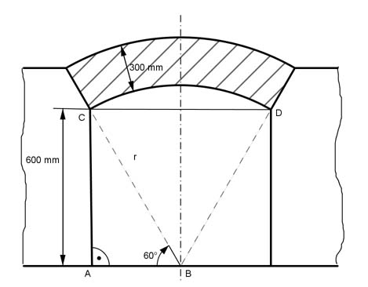

Aufgabe 148 Das 180 m lange Bogengewölbe ist aus Beton. Wieviel Material braucht man zur Herstellung? Wie viel m³ Erdreich müssen für den überdeckten Schacht ausgebaggert werden?  Im Dreieck ABC gilt: 600 mm tan 60° = --------- |*AB AB AB * tan 60° = 600 mm | :tan 60° 600 mm 600 mm AB = --------- = --------- = 346,4 mm tan 60° 1,732 600 mm sin 60° = --------- |*r r r * sin 60° = 600 mm |:sin 60° 600 mm 600 mm r = ---------- = -------- = 692,8 mm sin 60° 0,866 raußen = 692,8 mm + 300 mm = 992,8 mm 180 m = 180 000 mm 60° VGewölbe = π * (992,8² mm² - 692,8² mm²) * 180 000 mm * ------ 360° VGewölbe = 47 635 056 000 mm³ = 47,6 m³ CD = 2 * AB = 2 * 346,4 mm = 692,8 mm VSchacht = [Rechteck + (Kreisausschnitt - Dreieck)] * 180 000 mm 60° VSchacht = [692,8 mm * 600 mm + π * 692,8² mm² * ------ - 360° 692,8mm * 600 mm - -------------------] *180 000 mm 2 VSchacht = [415 680 mm² + (251 185 mm² - 207 840 mm²) * 180 000 mm VSchacht = 459 025 mm² * 180 000 mm = 82 624 500 000 mm³ VSchacht = 82,6 m³